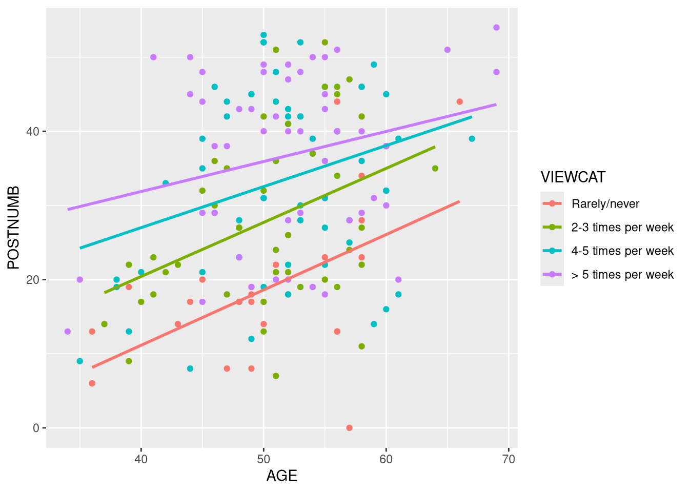

7.3 At-Home Exercises
7.3.1 Multiple-Group Path Analysis
To fix ideas, we’ll start these practical exercises by re-running part of the moderation analysis from the Week 3 At-Home Exercises as a multiple group model.
7.3.1.1
Load the Sesam2.sav data.
- NOTE: Unless otherwise specified, all analyses in Section 7.3.1 use these data.
Click to show code
VIEWCAT is a nominal grouping variable, but it is represented as a numeric
variable in the sesam2 data. The levels represent the following frequencies of
Sesame Street viewership of the children in the data:
VIEWCAT = 1: Rarely/NeverVIEWCAT = 2: 2–3 times a weekVIEWCAT = 3: 4–5 times a weekVIEWCAT = 4: > 5 times a week
We will use VIEWCAT as the grouping variable in our path model. To do so, we
don’t really need to convert VIEWCAT into a factor, but, if we do, lavaan
will give our groups meaningful labels in the output. That added clarity can be
pretty helpful.
7.3.1.2
Convert VIEWCAT into a factor.
- Make sure that
VIEWCAT = 1is the reference group. - Assign the factor labels denoted above.
Click to show code
library(dplyr)
## Store the old version for checking:
tmp <- sesam2$VIEWCAT
## Convert 'VIEWCAT' to a factor:
sesam2 <- mutate(sesam2,
VIEWCAT = factor(VIEWCAT,
labels = c("Rarely/never",
"2-3 times per week",
"4-5 times per week",
"> 5 times per week")
)
)
## Check the conversion:
table(old = tmp, new = sesam2$VIEWCAT, useNA = "always")## new
## old Rarely/never 2-3 times per week 4-5 times per week > 5 times per week
## 1 25 0 0 0
## 2 0 44 0 0
## 3 0 0 57 0
## 4 0 0 0 53
## <NA> 0 0 0 0
## new
## old <NA>
## 1 0
## 2 0
## 3 0
## 4 0
## <NA> 07.3.1.3
Create a conditional slopes plot to visualize the effect of AGE on POSTNUMB
within each of the VIEWCAT groups.
- Based on this visualization, do you think it is reasonable to expect that
VIEWCATmoderates the effect ofAGEonPOSTNUMB?
Click to show code
library(ggplot2)
ggplot(sesam2, aes(AGE, POSTNUMB, color = VIEWCAT)) +
geom_point() +
geom_smooth(method = "lm", se = FALSE)
Click for explanation
The regression lines representing the conditional focal effects are not parallel, so there appears to be some level of moderation. That being said, the differences are pretty small, so the moderation may not be significant (i.e., the non-parallel regression lines may simply be reflecting sampling variability).
We will use path analysis to test if VIEWCAT moderates the effect of AGE on
POSTNUMB. This analysis will entail three steps:
- Estimate the unrestricted multiple-group model wherein we regress
POSTNUMBontoAGEand specifyVIEWCATas the grouping factor. - Estimate the restricted model wherein we constrain the
AGE\(\rightarrow\)POSTNUMBeffect to be equal in allVIEWCATgroups. - Conduct a \(\Delta \chi^2\) test to compare the fit of the two models.
7.3.1.4
Estimate the unrestricted path model described above.
- Include the intercept term in your model.
- Judging from the focal effects estimate in each group, do you think moderation is plausible?
Click to show code
library(lavaan)
## Estimate the additive model a view the results:
out_full <- sem('POSTNUMB ~ 1 + AGE', data = sesam2, group = "VIEWCAT")
summary(out_full)## lavaan 0.6-18 ended normally after 1 iteration
##
## Estimator ML
## Optimization method NLMINB
## Number of model parameters 12
##
## Number of observations per group:
## Rarely/never 25
## 4-5 times per week 57
## > 5 times per week 53
## 2-3 times per week 44
##
## Model Test User Model:
##
## Test statistic 0.000
## Degrees of freedom 0
## Test statistic for each group:
## Rarely/never 0.000
## 4-5 times per week 0.000
## > 5 times per week 0.000
## 2-3 times per week 0.000
##
## Parameter Estimates:
##
## Standard errors Standard
## Information Expected
## Information saturated (h1) model Structured
##
##
## Group 1 [Rarely/never]:
##
## Regressions:
## Estimate Std.Err z-value P(>|z|)
## POSTNUMB ~
## AGE 0.747 0.239 3.118 0.002
##
## Intercepts:
## Estimate Std.Err z-value P(>|z|)
## .POSTNUMB -18.721 12.142 -1.542 0.123
##
## Variances:
## Estimate Std.Err z-value P(>|z|)
## .POSTNUMB 73.285 20.728 3.536 0.000
##
##
## Group 2 [4-5 times per week]:
##
## Regressions:
## Estimate Std.Err z-value P(>|z|)
## POSTNUMB ~
## AGE 0.554 0.234 2.369 0.018
##
## Intercepts:
## Estimate Std.Err z-value P(>|z|)
## .POSTNUMB 4.861 12.178 0.399 0.690
##
## Variances:
## Estimate Std.Err z-value P(>|z|)
## .POSTNUMB 135.923 25.461 5.339 0.000
##
##
## Group 3 [> 5 times per week]:
##
## Regressions:
## Estimate Std.Err z-value P(>|z|)
## POSTNUMB ~
## AGE 0.405 0.214 1.894 0.058
##
## Intercepts:
## Estimate Std.Err z-value P(>|z|)
## .POSTNUMB 15.676 11.249 1.394 0.163
##
## Variances:
## Estimate Std.Err z-value P(>|z|)
## .POSTNUMB 115.942 22.523 5.148 0.000
##
##
## Group 4 [2-3 times per week]:
##
## Regressions:
## Estimate Std.Err z-value P(>|z|)
## POSTNUMB ~
## AGE 0.729 0.255 2.855 0.004
##
## Intercepts:
## Estimate Std.Err z-value P(>|z|)
## .POSTNUMB -8.747 13.003 -0.673 0.501
##
## Variances:
## Estimate Std.Err z-value P(>|z|)
## .POSTNUMB 112.019 23.882 4.690 0.000Click for explanation
There are some notable differences in the AGE \(\rightarrow\) POSTNUMB focal
effect between VIEWCAT groups. It looks like VIEWCAT could moderate the
focal effect.
7.3.1.5
Estimate the restricted model described above.
- Equate the focal effect across all
VIEWCATgroups.
Click to show code
## Estimate the restricted model and view the results:
out_res <- sem('POSTNUMB ~ 1 + c("b1", "b1", "b1", "b1") * AGE',
data = sesam2,
group = "VIEWCAT")
summary(out_res)## lavaan 0.6-18 ended normally after 38 iterations
##
## Estimator ML
## Optimization method NLMINB
## Number of model parameters 12
## Number of equality constraints 3
##
## Number of observations per group:
## Rarely/never 25
## 4-5 times per week 57
## > 5 times per week 53
## 2-3 times per week 44
##
## Model Test User Model:
##
## Test statistic 1.486
## Degrees of freedom 3
## P-value (Chi-square) 0.685
## Test statistic for each group:
## Rarely/never 0.413
## 4-5 times per week 0.027
## > 5 times per week 0.760
## 2-3 times per week 0.287
##
## Parameter Estimates:
##
## Standard errors Standard
## Information Expected
## Information saturated (h1) model Structured
##
##
## Group 1 [Rarely/never]:
##
## Regressions:
## Estimate Std.Err z-value P(>|z|)
## POSTNUMB ~
## AGE (b1) 0.592 0.118 5.032 0.000
##
## Intercepts:
## Estimate Std.Err z-value P(>|z|)
## .POSTNUMB -10.966 6.154 -1.782 0.075
##
## Variances:
## Estimate Std.Err z-value P(>|z|)
## .POSTNUMB 74.505 21.073 3.536 0.000
##
##
## Group 2 [4-5 times per week]:
##
## Regressions:
## Estimate Std.Err z-value P(>|z|)
## POSTNUMB ~
## AGE (b1) 0.592 0.118 5.032 0.000
##
## Intercepts:
## Estimate Std.Err z-value P(>|z|)
## .POSTNUMB 2.869 6.275 0.457 0.647
##
## Variances:
## Estimate Std.Err z-value P(>|z|)
## .POSTNUMB 135.988 25.473 5.339 0.000
##
##
## Group 3 [> 5 times per week]:
##
## Regressions:
## Estimate Std.Err z-value P(>|z|)
## POSTNUMB ~
## AGE (b1) 0.592 0.118 5.032 0.000
##
## Intercepts:
## Estimate Std.Err z-value P(>|z|)
## .POSTNUMB 5.923 6.313 0.938 0.348
##
## Variances:
## Estimate Std.Err z-value P(>|z|)
## .POSTNUMB 117.616 22.848 5.148 0.000
##
##
## Group 4 [2-3 times per week]:
##
## Regressions:
## Estimate Std.Err z-value P(>|z|)
## POSTNUMB ~
## AGE (b1) 0.592 0.118 5.032 0.000
##
## Intercepts:
## Estimate Std.Err z-value P(>|z|)
## .POSTNUMB -1.826 6.157 -0.297 0.767
##
## Variances:
## Estimate Std.Err z-value P(>|z|)
## .POSTNUMB 112.751 24.039 4.690 0.0007.3.1.6
Test for moderation by comparing the full and restricted models from 7.3.1.4 and 7.3.1.5, respectively:
- Does
VIEWCATsignificantly moderate the effect ofAGEonPOSTNUMB?
Click to show code
Click for explanation
No, VIEWCAT does not significantly moderate the effect of AGE on POSTNUMB (\(\Delta \chi^2[3] = 1.486\), \(p = 0.685\)).
7.3.2 Multiple-Group CFA
In the next part of these exercises, we will estimate a multiple-group CFA to
evaluate the measurement structure of a scale assessing Prolonged Grief Disorder.
The relevant data are contained in the PGDdata2.txt file. This dataset
consists of a grouping variable, Kin2 (with two levels: “partner” and “else”)
and 5 items taken from the Inventory of Complicated Grief:
- Yearning
- Part of self died
- Difficulty accepting the loss
- Avoiding reminders of deceased
- Bitterness about the loss
You can find more information about this scale in Boelen et al. (2010).
7.3.2.1
Load the PGDdata2.txt data.
Use the
read.table()function to load the data.- Convert the missing values to
NAvia thena.stringsargument. - Retain the column labels via the
headerargument. - Specify the field delimiter as the tab character (i.e.,
"\t").
- Convert the missing values to
Exclude any cases with missing values on
Kin2.NOTE: Unless otherwise specified, all analyses in Section 7.3.2 use these data.
Click to show code
## Load the data:
pgd <- read.table("PGDdata2.txt",
na.strings = "-999",
header = TRUE,
sep = "\t") %>%
filter(!is.na(Kin2))
## Check the results:
head(pgd)
summary(pdg)
str(pgd)## Kin2 b1pss1 b2pss2 b3pss3
## Min. :0.0000 Min. :0.000 Min. :0.0000 Min. :0.0000
## 1st Qu.:0.0000 1st Qu.:0.000 1st Qu.:0.0000 1st Qu.:0.0000
## Median :1.0000 Median :1.000 Median :0.0000 Median :1.0000
## Mean :0.6661 Mean :1.236 Mean :0.4622 Mean :0.9771
## 3rd Qu.:1.0000 3rd Qu.:2.000 3rd Qu.:1.0000 3rd Qu.:1.0000
## Max. :1.0000 Max. :5.000 Max. :3.0000 Max. :5.0000
## NA's :1
## b4pss4 b5pss5
## Min. :0.000 Min. :0.0000
## 1st Qu.:0.000 1st Qu.:0.0000
## Median :1.000 Median :0.0000
## Mean :1.009 Mean :0.6761
## 3rd Qu.:2.000 3rd Qu.:1.0000
## Max. :3.000 Max. :3.0000
## NA's :1## 'data.frame': 569 obs. of 6 variables:
## $ Kin2 : int 0 0 1 1 0 1 1 1 1 1 ...
## $ b1pss1: int 1 1 1 1 1 2 1 3 1 1 ...
## $ b2pss2: int 1 0 1 0 1 2 1 2 0 0 ...
## $ b3pss3: int 1 0 1 1 2 2 1 2 1 1 ...
## $ b4pss4: int 1 1 1 1 0 2 2 3 0 1 ...
## $ b5pss5: int 1 0 0 0 0 1 2 3 0 0 ...7.3.2.2
Run a single-group CFA wherein the five scale variables described above indicate a single latent factor.
- Do not include any grouping variable.
- Use the default settings in the
cfa()function.
Click to show code
7.3.2.3
Summarize the evaluate the fitted CFA
- Does the model fit well?
- Are the items homogeneously associated with the latent factor?
- Which item is most weakly associated with the latent factor?
Click to show code
## Summarize the fitted model:
summary(out0, fit.measures = TRUE, standardized = TRUE, rsquare = TRUE)## lavaan 0.6-18 ended normally after 19 iterations
##
## Estimator ML
## Optimization method NLMINB
## Number of model parameters 10
##
## Used Total
## Number of observations 567 569
##
## Model Test User Model:
##
## Test statistic 8.110
## Degrees of freedom 5
## P-value (Chi-square) 0.150
##
## Model Test Baseline Model:
##
## Test statistic 775.364
## Degrees of freedom 10
## P-value 0.000
##
## User Model versus Baseline Model:
##
## Comparative Fit Index (CFI) 0.996
## Tucker-Lewis Index (TLI) 0.992
##
## Loglikelihood and Information Criteria:
##
## Loglikelihood user model (H0) -3219.918
## Loglikelihood unrestricted model (H1) -3215.863
##
## Akaike (AIC) 6459.836
## Bayesian (BIC) 6503.240
## Sample-size adjusted Bayesian (SABIC) 6471.495
##
## Root Mean Square Error of Approximation:
##
## RMSEA 0.033
## 90 Percent confidence interval - lower 0.000
## 90 Percent confidence interval - upper 0.073
## P-value H_0: RMSEA <= 0.050 0.710
## P-value H_0: RMSEA >= 0.080 0.023
##
## Standardized Root Mean Square Residual:
##
## SRMR 0.018
##
## Parameter Estimates:
##
## Standard errors Standard
## Information Expected
## Information saturated (h1) model Structured
##
## Latent Variables:
## Estimate Std.Err z-value P(>|z|) Std.lv Std.all
## grief =~
## b1pss1 1.000 0.752 0.759
## b2pss2 0.454 0.043 10.570 0.000 0.341 0.495
## b3pss3 0.831 0.058 14.445 0.000 0.625 0.691
## b4pss4 0.770 0.055 14.010 0.000 0.579 0.667
## b5pss5 0.817 0.057 14.410 0.000 0.614 0.689
##
## Variances:
## Estimate Std.Err z-value P(>|z|) Std.lv Std.all
## .b1pss1 0.416 0.037 11.300 0.000 0.416 0.424
## .b2pss2 0.358 0.023 15.549 0.000 0.358 0.755
## .b3pss3 0.427 0.033 13.117 0.000 0.427 0.522
## .b4pss4 0.419 0.031 13.599 0.000 0.419 0.555
## .b5pss5 0.417 0.032 13.160 0.000 0.417 0.525
## grief 0.565 0.059 9.514 0.000 1.000 1.000
##
## R-Square:
## Estimate
## b1pss1 0.576
## b2pss2 0.245
## b3pss3 0.478
## b4pss4 0.445
## b5pss5 0.475Click for explanation
The model fits the data quite well (\(\chi^2[5] = 8.11\), \(p = 0.15\), \(\textit{RMSEA} = 0.033\), \(\textit{CFI} = 0.996\), \(\textit{SRMR} = 0.018\)).
All of the indicators appear to be more-or-less equally good indicators of the latent factor except for b2pss2 which has a standardized factor loading of \(\lambda = 0.495\) and \(R^2 = 0.245\).
7.3.2.4
Rerun the CFA from 7.3.2.2 as a multiple-group model.
- Use the
Kin2variable as the grouping factor. - Do not place any equality constraints across groups.
7.3.2.5
Summarize the fitted multiple-group CFA from 7.3.2.4.
- Does the two-group model fit the data well?
- Do you notice any salient differences between the two sets of within-group estimates?
Click to show code
## lavaan 0.6-18 ended normally after 27 iterations
##
## Estimator ML
## Optimization method NLMINB
## Number of model parameters 30
##
## Number of observations per group: Used Total
## 0 188 190
## 1 379 379
##
## Model Test User Model:
##
## Test statistic 11.317
## Degrees of freedom 10
## P-value (Chi-square) 0.333
## Test statistic for each group:
## 0 8.976
## 1 2.340
##
## Model Test Baseline Model:
##
## Test statistic 781.358
## Degrees of freedom 20
## P-value 0.000
##
## User Model versus Baseline Model:
##
## Comparative Fit Index (CFI) 0.998
## Tucker-Lewis Index (TLI) 0.997
##
## Loglikelihood and Information Criteria:
##
## Loglikelihood user model (H0) -3206.363
## Loglikelihood unrestricted model (H1) -3200.705
##
## Akaike (AIC) 6472.727
## Bayesian (BIC) 6602.937
## Sample-size adjusted Bayesian (SABIC) 6507.701
##
## Root Mean Square Error of Approximation:
##
## RMSEA 0.022
## 90 Percent confidence interval - lower 0.000
## 90 Percent confidence interval - upper 0.070
## P-value H_0: RMSEA <= 0.050 0.789
## P-value H_0: RMSEA >= 0.080 0.018
##
## Standardized Root Mean Square Residual:
##
## SRMR 0.017
##
## Parameter Estimates:
##
## Standard errors Standard
## Information Expected
## Information saturated (h1) model Structured
##
##
## Group 1 [0]:
##
## Latent Variables:
## Estimate Std.Err z-value P(>|z|) Std.lv Std.all
## grief =~
## b1pss1 1.000 0.702 0.712
## b2pss2 0.372 0.076 4.922 0.000 0.261 0.410
## b3pss3 0.938 0.118 7.986 0.000 0.659 0.709
## b4pss4 0.909 0.116 7.848 0.000 0.638 0.691
## b5pss5 0.951 0.122 7.774 0.000 0.667 0.683
##
## Intercepts:
## Estimate Std.Err z-value P(>|z|) Std.lv Std.all
## .b1pss1 1.346 0.072 18.727 0.000 1.346 1.366
## .b2pss2 0.441 0.046 9.499 0.000 0.441 0.693
## .b3pss3 1.059 0.068 15.618 0.000 1.059 1.139
## .b4pss4 1.122 0.067 16.671 0.000 1.122 1.216
## .b5pss5 0.745 0.071 10.442 0.000 0.745 0.762
##
## Variances:
## Estimate Std.Err z-value P(>|z|) Std.lv Std.all
## .b1pss1 0.478 0.067 7.118 0.000 0.478 0.493
## .b2pss2 0.338 0.037 9.205 0.000 0.338 0.832
## .b3pss3 0.430 0.060 7.170 0.000 0.430 0.498
## .b4pss4 0.445 0.060 7.408 0.000 0.445 0.522
## .b5pss5 0.511 0.068 7.519 0.000 0.511 0.534
## grief 0.493 0.098 5.007 0.000 1.000 1.000
##
## R-Square:
## Estimate
## b1pss1 0.507
## b2pss2 0.168
## b3pss3 0.502
## b4pss4 0.478
## b5pss5 0.466
##
##
## Group 2 [1]:
##
## Latent Variables:
## Estimate Std.Err z-value P(>|z|) Std.lv Std.all
## grief =~
## b1pss1 1.000 0.769 0.778
## b2pss2 0.502 0.052 9.597 0.000 0.386 0.542
## b3pss3 0.785 0.066 11.945 0.000 0.604 0.680
## b4pss4 0.708 0.062 11.497 0.000 0.544 0.652
## b5pss5 0.762 0.062 12.185 0.000 0.586 0.696
##
## Intercepts:
## Estimate Std.Err z-value P(>|z|) Std.lv Std.all
## .b1pss1 1.182 0.051 23.277 0.000 1.182 1.196
## .b2pss2 0.475 0.037 12.973 0.000 0.475 0.666
## .b3pss3 0.934 0.046 20.460 0.000 0.934 1.051
## .b4pss4 0.955 0.043 22.270 0.000 0.955 1.144
## .b5pss5 0.644 0.043 14.879 0.000 0.644 0.764
##
## Variances:
## Estimate Std.Err z-value P(>|z|) Std.lv Std.all
## .b1pss1 0.385 0.043 8.862 0.000 0.385 0.394
## .b2pss2 0.359 0.029 12.468 0.000 0.359 0.706
## .b3pss3 0.425 0.039 11.025 0.000 0.425 0.538
## .b4pss4 0.401 0.035 11.420 0.000 0.401 0.575
## .b5pss5 0.366 0.034 10.767 0.000 0.366 0.516
## grief 0.592 0.073 8.081 0.000 1.000 1.000
##
## R-Square:
## Estimate
## b1pss1 0.606
## b2pss2 0.294
## b3pss3 0.462
## b4pss4 0.425
## b5pss5 0.484Click for explanation
The two-group model also fits the data very well (\(\chi^2[10] = 11.32\), \(p = 0.333\), \(\textit{RMSEA} = 0.022\), \(\textit{CFI} = 0.998\), \(\textit{SRMR} = 0.017\)).
No, there are no striking differences between the two sets of estimates. Although there is certainly some variability between groups, the two sets of estimates don’t look systematically different.
7.3.2.6
Based on the above results, what can you conclude about configural, weak, and
strong measurement invariance across the Kin2 groups?
Click for explanation
- Configural invariance holds. The unrestricted multiple-group CFA fits the data adequately (very well, actually), and the measurement model parameters are reasonable in both groups.
- We cannot yet draw any conclusions about weak or strong invariance. We need to do the appropriate model comparison tests first.
End of At-Home Exercises